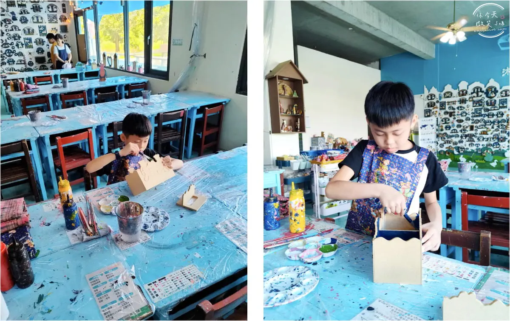
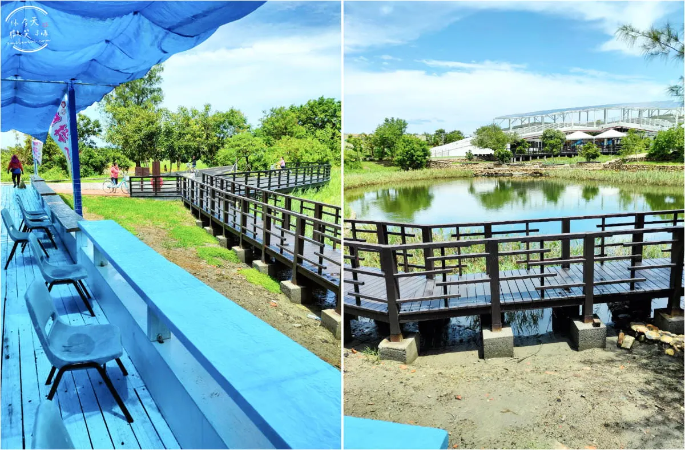

孩子畫想像，大人畫陪伴
從選色、下筆到組裝，創作過程沒有唯一答案。文章實訪提到現場有彩繪引導，完成的木作也能帶回家繼續使用。
ABOUT · 沐藝家
從外銷木藝工廠轉型成親子體驗空間，沐藝家把木工、彩繪與口湖的慢節奏放在一起。挑選筆筒、時鐘、收納盒等木製品，再用自己的顏色完成它——每一件都不會重複。
園區參觀；DIY 材料與餐飲另計，以現場公告為準。
旅遊實訪文章記錄的空間容納資訊，適合家庭與團體安排。
第一版已整理的現場照片，涵蓋空間、作品、創作與周邊景色。
A SLOW AFTERNOON

從選色、下筆到組裝，創作過程沒有唯一答案。文章實訪提到現場有彩繪引導，完成的木作也能帶回家繼續使用。

沐藝家位於口湖遊客中心後方，周邊有生態池與開闊景色，適合把 DIY 排進口湖半日或一日遊。
VISITED & REPORTED
食尚玩家收錄的景點資訊卡，提供地址、電話等到訪資訊。
政府平台收錄場域介紹、團體體驗與在地食材餐飲資訊。
完整記錄園區入口、DIY 品項、創作過程與口湖周邊。
實訪介紹寬敞空間、餐飲、團體接待與交通位置。
以大量照片記錄木藝品、室內空間與親子 DIY。
將口湖在地食材、遊客中心與木藝 DIY 串成一日行程。
早期影像紀錄，補充工廠轉型與木藝體驗背景。
家庭實訪記錄木造工廠轉型、老師指導與成品。
不是吵鬧型景點，而是孩子專心畫畫、大人能在旁邊放空的地方。
綜合官方社群與旅遊實訪文章描述整理；非逐字顧客評論。
PHOTO WALL · 63 MOMENTS
PLAN YOUR VISIT